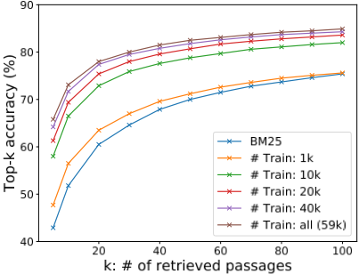

面向开放域问答的稠密段落检索
开放域问答依赖高效段落检索来筛选候选上下文，TF-IDF/BM25 等稀疏检索长期是事实标准，但难以处理同义改写等语义匹配。论文提出 DPR：用两个独立 BERT 编码器分别编码问题与段落，以内积为相似度，通过 in-batch negatives 加每题一条 BM25 难负例的简单训练方案，仅用问答对微调即可得到高质量稠密检索器，无需 ORQA 式额外预训练。结果显示 DPR 在多个数据集上 top-20 检索准确率比 BM25 高 9%-19%，端到端 EM 41.5% vs ORQA 33.3%，刷新多个开放域 QA 基准 SOTA，且仅 1,000 条训练对即可超过 BM25。对团队而言，这是 RAG 检索层的奠基工作，其负例构造、训练技巧与 top-k 检索评测方法可直接用于知识库问答与上下文检索组件的建设与调优。
开放域问答采用'检索器选候选段落 + 阅读器抽取答案'的两阶段框架，其中检索长期依赖 TF-IDF/BM25 等稀疏关键词匹配，无法处理同义词与改写等语义关系；同时学界普遍认为训练高质量稠密表示需要大量标注数据，此前唯一超越 BM25 的 ORQA 依赖计算昂贵的 ICT 预训练，且其上下文编码器未用问答对微调、表示次优。论文要回答：能否不做额外预训练，仅用少量问题-段落对训练出显著超越 BM25 的稠密检索器。
提出 Dense Passage Retriever（DPR）：双编码器（dual-encoder）架构，用两个独立 BERT（base, uncased）分别编码问题与段落，取 [CLS] 向量（d=768），相似度取内积；段落向量离线用 FAISS（HNSW）建索引，在线通过最大内积搜索（MIPS）取 top-k。训练视为度量学习问题，以正例段落的负对数似然为损失；核心技巧是 in-batch negatives——batch 内其他问题的 gold 段落充任负例，batch size 128 时每批有效利用 B² 个问题-段落对，再为每题加一条 BM25 难负例（不含答案但关键词高度匹配）；正例可来自数据集 gold context，或用 BM25 返回的含答案最高排名段落做远程监督（distant supervision）。端到端系统为 DPR 检索器 + BERT reader（同时输出段落选择分与答案 span 分），检索器与阅读器分开训练而非联合训练。
在多个开放域 QA 数据集上，DPR 的 top-20 检索准确率比强 Lucene BM25 基线高 9%-19%（绝对值）；Natural Questions 上 top-20 为 78.4% vs 59.1%，Top-5 为 65.2% vs 42.9%
端到端 QA：open Natural Questions 上 EM 41.5% vs ORQA 33.3%；五个数据集中四个超过此前 SOTA，EM 绝对提升 1%-12%
样本效率：仅用 1,000 个问题-段落对训练的 DPR 即已超过 BM25，训练对从 1k 增至 59k 检索准确率持续提升
跨数据集泛化：仅在 NQ 上训练、直接用于 WebQuestions/TREC 时 top-20 准确率 69.9/86.3，比微调后最优低 3-5 点，仍大幅高于 BM25 的 55.0/70.9
运行效率：FAISS 内存索引下每秒处理 995.0 个问题（每题返回 top-100），BM25/Lucene 为每 CPU 线程每秒 23.7 个；但索引构建成本高——2100 万段落的向量编码约需 8.8 小时（8 GPU）、FAISS 建索引 8.5 小时，而 Lucene 倒排索引仅约 30 分钟
消融：in-batch negatives 训练显著优于标准 1-of-N 设置，准确率随 batch 增大持续提升；加一条 BM25 难负例显著提升、加两条无进一步收益；用远程监督正例仅损失约 1 点 top-k 准确率；L2 与内积相当、均优于 cosine，triplet loss 影响不大
retriever 与 reader 联合训练的消融仅得 39.8 EM，低于分开训练方案；NQ 上 k=50 最优，k=10 仅损失 0.7 EM（40.8 vs 41.5）
相对 ORQA/REALM 等依赖额外预训练任务（如 ICT）或昂贵端到端联合训练的方法，DPR 证明仅凭现有问答对、用 in-batch negatives + BM25 难负例的简单监督方案微调双编码器即可大幅超越 BM25，无需额外预训练；并通过系统消融厘清了负例类型、batch 规模、相似度函数与损失函数等关键训练要素的作用，同时实证验证了在开放域 QA 中更高的检索精度可直接转化为更高的端到端 QA 精度。
相关度级别：high
命中能力域：3.1 上下文工程与记忆
理由：团队核心工作之一是基于 LLM 的知识库问答与上下文组织，DPR 正是 RAG 检索层的奠基性论文：它确立了'双编码器稠密检索 + FAISS 索引 + 可选 BM25 分数线性融合'这一至今通用的工程范式，直接命中 3.1 的 RAG/检索增强与结构化上下文组织；其负例构造方法（BM25 难负例、in-batch negatives）、少量标注即可微调出领域检索器的样本效率结论、top-k 检索准确率这一独立评测指标，以及'检索精度决定最终答案质量'的实证，都是团队搭建和调优检索增强管线时可直接复用的方法与判断依据；论文还给出两种检索范式各自的失效模式（语义改写 vs 罕见关键短语），可直接支撑混合检索的工程决策。
建议动作：深入精读并做内部分享
arXiv:2004.04906v3 [cs.CL] 2020年9月30日
面向开放域问答的稠密段落检索
Vladimir Karpukhin ∗ , Barlas O˘ guz ∗ , Sewon Min † , Patrick Lewis, Ledell Wu, Sergey Edunov, Danqi Chen ‡ , Wen-tau Yih
Facebook AI
† 华盛顿大学
‡ 普林斯顿大学
{ vladk, barlaso, plewis, ledell, edunov, scottyih sewon@cs.washington.edu danqic@cs.princeton.edu
开放域问答（open-domain question answering）依赖于高效的段落检索来选择候选上下文，其中传统的稀疏向量空间模型，如 TF-IDF 或 BM25，是事实上的方法。在本工作中，我们证明检索可以仅使用稠密表示（dense representations）来实际实现，其中嵌入（embedding）通过一个简单的双编码器（dual-encoder）框架从少量问题和段落中学习得到。在广泛的开放域 QA 数据集上进行评估时，我们的稠密检索器在 top-20 段落检索准确率方面大幅超越强大的 Lucene-BM25 系统，绝对提升达 9%-19%，并帮助我们的端到端 QA 系统在多个开放域 QA 基准测试（benchmark）上建立了新的最先进水平（state-of-the-art）。1
开放域问答（Open-domain question answering，QA）（Voorhees, 1999）是一项利用大规模文档集合来回答事实型问题（factoid question）的任务。早期的问答系统往往十分复杂，由多个组件构成（Ferrucci (2012); Moldovan et al. (2003) 等），而阅读理解模型的进展则提示了一种大幅简化的两阶段框架：（1）上下文检索器（context retriever）首先选出一小部分段落，其中某些段落包含问题的答案；然后（2）机器阅读器（machine reader）对检索到的上下文进行细致检查并识别出正确答案（Chen et al., 2017）。尽管将开放域问答简化为机器阅读是一种非常合理的策略，但在实践中常常观察到巨大的性能下降²，这表明需要改进检索。
∗ 同等贡献
1 代码和训练好的模型已发布于 https://github.com/facebookresearch/DPR。
2 例如，SQuAD v1.1 上的精确匹配（exact match）分数从 80% 以上降至不足 40%（Yang et al., 2019a）。
} @fb.com
开放域问答中的检索通常使用 TF-IDF 或 BM25（Robertson and Zaragoza, 2009）来实现，它们借助倒排索引高效地匹配关键词，可以视为以高维稀疏向量（带权重）来表示问题和上下文。相反，稠密的潜在语义编码（dense, latent semantic encoding）在设计上与稀疏表示形成互补。例如，由完全不同的词元（token）组成的同义词或改述（paraphrase）仍可能被映射到彼此接近的向量。考虑问题“Who is the bad guy in lord of the rings?”，它可以从上下文“Sala Baker is best known for portraying the villain Sauron in the Lord of the Rings trilogy.”中得到回答。基于词项的系统很难检索到这样的上下文，而稠密检索系统则能够更好地将“bad guy”与“villain”匹配起来，从而取回正确的上下文。稠密编码还可以通过调整嵌入函数来学习，这为获得面向特定任务的表示提供了额外的灵活性。借助特殊的内存内数据结构和索引方案，可以使用最大内积搜索（maximum inner product search，MIPS）算法高效地完成检索（例如 Shrivastava and Li (2014); Guo et al. (2016)）。
然而，人们普遍认为，学习一个好的稠密向量表示需要大量带标注的问题-上下文对。因此，在 ORQA（Lee et al., 2019）之前，稠密检索方法从未被证明能在开放域 QA 中超越 TF-IDF/BM25。ORQA 提出了一种精巧的逆完形填空任务（inverse cloze task, ICT）目标，即预测包含被遮蔽句子的文本块，用于额外的预训练。随后，问题编码器和阅读器（reader）模型再使用问题-答案对进行联合微调。尽管 ORQA 成功证明了稠密检索可以超越 BM25，并在多个开放域 QA 数据集上创造了新的最先进结果，但它也存在两个弱点。首先，ICT 预训练的计算量很大，而且在目标函数中，普通句子是否是问题的良好替代品也并不完全清楚。其次，由于上下文编码器没有使用问题-答案对进行微调，其对应的表示可能是次优的。
在本文中，我们探讨这样一个问题：能否仅利用问题-段落（或答案）对来训练一个更好的稠密嵌入模型，而无需额外的预训练？通过利用如今已成为标准的 BERT 预训练模型（Devlin et al., 2019）和双编码器（dual-encoder）架构（Bromley et al., 1994），我们专注于利用相对较少的问题-段落对来设计合适的训练方案。经过一系列细致的消融（ablation）研究，我们的最终方案出人意料地简单：嵌入的优化目标是最大化问题向量与相关段落向量的内积，其目标函数在一个批次（batch）内对所有问题-段落对进行比较。我们的稠密段落检索器（Dense Passage Retriever, DPR）异常强大：它不仅大幅超越 BM25（Top-5 准确率为 65.2% 对 42.9%），而且在开放 Natural Questions 设定下（Lee et al., 2019; Kwiatkowski et al., 2019），与 ORQA 相比，端到端 QA 准确率也取得了显著提升（41.5% 对 33.3%）。
我们的贡献有两个方面。首先，我们证明了在合适的训练设置下，仅在现有问题-段落对上微调问题编码器和段落编码器，就足以大幅超越 BM25。我们的实验结果还表明，可能并不需要额外的预训练。其次，我们验证了在开放域问答的背景下，更高的检索精度确实能转化为更高的端到端 QA 准确率。通过将现代阅读器模型应用于检索到的 top 段落，我们在开放检索（open-retrieval）设定下，在多个 QA 数据集上取得了与若干复杂得多的系统相当或更好的结果。
本文所研究的开放域问答（open-domain QA）问题可以描述如下。给定一个事实型问题（factoid question），例如“谁最早为《恶搞之家》（Family Guy）中的 Meg 配音？”或“第八世达赖喇嘛出生于哪里？”，系统需要利用一个涵盖多样化主题的大型语料库来回答该问题。更具体地说，我们假设抽取式问答（extractive QA）的设定，即答案被限定为出现在语料库中一个或多个段落内的一个片段（span）。假设我们的文档集合包含 D 篇文档 d 1 , d 2 , · · · , d D。我们首先将每篇文档切分为等长的文本段落作为基本检索单元 3，从而在语料库 C = { p 1 , p 2 , . . . , p M } 中得到总共 M 个段落，其中每个段落 p i 都可以被视为一个词元（token）序列 w ( i ) 1 , w ( i ) 2 , · · · , w ( i ) | p i |。给定一个问题 q，任务是从某个段落 p i 中找出一个能够回答该问题的片段 w ( i ) s , w ( i ) s +1 , · · · , w ( i ) e。需要注意的是，为了覆盖广泛的领域，语料库的规模很容易从数百万篇文档（例如 Wikipedia）到数十亿篇（例如 Web）不等。因此，任何开放域问答系统都需要包含一个高效的检索器（retriever）组件，以便在应用阅读器（reader）抽取答案之前，先选出一小部分相关文本（Chen et al., 2017）。4 形式化地说，检索器 R : ( q, C ) → C F 是一个函数，它以问题 q 和语料库 C 为输入，返回一个小得多的文本过滤集 C F ⊂ C，其中 |C F | = k ≪|C|。对于固定的 k，可以单独依据 top-k 检索精度（top-k retrieval accuracy）来评估检索器，该指标是指 C F 中包含能够回答问题的片段的问题所占的比例。
本文的研究工作聚焦于改进开放域问答（open-domain QA）中的检索组件。给定由 M 个文本段落组成的集合，我们的稠密段落检索器（dense passage retriever, DPR）的目标是将所有段落索引到一个低维且连续的空间中，从而能够在运行时高效地检索出与输入问题相关的 top k 个段落，供阅读器（reader）使用。需要注意的是，M 可能非常庞大（例如，在 4.1 节所述的我们的实验中包含 2100 万个段落），而 k 通常较小，例如 20 - 100。
我们的稠密段落检索器（DPR）使用一个稠密编码器 E_P(·)，它将任意文本段落映射为 d 维实值向量，并为我们将用于检索的全部 M 个段落建立索引。
3 文本段落的理想大小和边界是检索器与阅读器二者的函数。我们在初步试验中也对自然段落进行了实验，发现使用固定长度的段落在检索和最终问答（QA）准确率上都表现更好，正如 Wang et al. (2019) 所观察到的那样。
4 例外包括 (Seo et al., 2019) 和 (Roberts et al., 2020)，它们分别检索和生成答案。
在运行时，DPR 应用另一个编码器 E_Q(·)，将输入问题映射为 d 维向量，并检索出其向量与问题向量最接近的 k 个段落。我们使用问题与段落各自向量的点积来定义二者之间的相似度：
尽管确实存在更具表达力的模型形式来度量问题与段落之间的相似度，例如由多层交叉注意力构成的网络，但相似度函数必须是可分解的，以便段落集合的表示能够被预先计算。大多数可分解的相似度函数都是欧氏距离（L2）的某种变换。例如，对于单位向量，余弦等价于内积；而马氏距离（Mahalanobis distance）等价于变换空间中的 L2 距离。内积搜索及其与余弦相似度和 L2 距离的联系已被广泛使用和研究 (Mussmann and Ermon, 2016; Ram and Gray, 2012)。由于我们的消融实验发现其他相似度函数的表现相当（5.2 节；附录 B），我们因此选择更简单的内积函数，并通过学习更好的编码器来改进稠密段落检索器。
编码器 虽然原则上问题编码器和段落编码器可以由任意神经网络实现，但在本工作中我们使用两个相互独立的 BERT (Devlin et al., 2019) 网络（base、uncased），并取 [CLS] 词
训练编码器使得点积相似度（式 (1)）成为用于检索的良好排序函数，这本质上是一个度量学习问题（Kulis, 2013）。其目标是通过学习更好的嵌入函数，构建一个向量空间，使得相关的问题-段落对相比不相关的对具有更小的距离（即更高的相似度）。
设 D = {〈 q i , p + i , p - i, 1 , · · · , p - i,n 〉} m i =1 为由 m 个实例组成的训练数据。每个实例包含一个问题 q i 和一个相关（正例）段落 p + i ，以及 n 个不相关（负例）段落 p - i,j 。我们将损失函数优化为正例段落的负对数似然：
正例与负例段落 对于检索问题而言，正例通常是显式可得的，而负例则需要从一个极其庞大的候选池中选取。例如，与问题相关的段落可能已在问答（QA）数据集中给出，也可以利用答案来找到。集合中的所有其他段落虽然没有被显式指定，但默认可视为不相关。在实践中，如何选取负例常常被忽视，但它对学习高质量的编码器可能具有决定性作用。我们考虑三种不同类型的负例：(1) Random：语料库中任意随机抽取的段落；(2) BM25：由 BM25 返回的排名靠前、不包含答案但匹配了大多数问题词元的段落；(3) Gold：训练集中与其他问题配对的正例段落。我们将在 5.2 节讨论不同类型的负例段落和训练方案所带来的影响。我们最好的模型使用来自同一小批量（mini-batch）的 gold 段落以及一个 BM25 负例段落。特别地，将同一批次中的 gold 段落复用为负例，可以在取得出色性能的同时使计算高效。我们将在下文讨论这一方法。
批内负例（in-batch negatives） 假设一个小批量中有 B 个问题，且每个问题都与一个相关段落相关联。设 Q 和 P 分别为批次大小为 B 时问题嵌入和段落嵌入构成的 ( B × d ) 矩阵。S = QP T 是一个 ( B × B ) 的相似度分数矩阵，其中每一行对应一个问题，与 B 个段落配对。这样一来，我们复用了计算，并在每个批次中有效地对 B 2 个 ( q i , p j ) 问题/段落对进行训练。任意 ( q i , p j ) 对在 i = j 时为正例，否则为负例。这在每个批次中构造出 B 个训练实例，其中每个问题有 B - 1 个负例段落。
批内负例这一技巧此前已在全批次（full batch）设置中得到使用（Yih et al., 2011），最近又被用于小批量设置（Henderson et al., 2017; Gillick et al., 2019）。已有研究表明，这是学习双编码器（dual-encoder）模型的一种有效策略，能够增加训练样本的数量。
在本节中，我们描述实验所使用的数据以及基本实验设置。
按照（Lee et al., 2019）的做法，我们使用2018年12月20日的英文维基百科转储（dump）作为回答问题的源文档。我们首先应用DrQA（Chen et al., 2017）中发布的预处理代码，从维基百科转储中提取文章中干净的文本部分。该步骤会去除表格、信息框（infobox）、列表等半结构化数据，以及消歧义页面。随后，我们参照（Wang et al., 2019）的做法，将每篇文章切分为多个互不重叠的100词文本块作为段落（passage），作为我们的基本检索单元，最终共得到21,015,324个段落。5 此外，每个段落的前面还会加上该段落来源的维基百科文章的标题，并附带一个[SEP]标记。
我们使用与先前工作（Lee et al., 2019）相同的五个问答（QA）数据集以及训练/开发/测试集划分方法。下面我们简要描述每个数据集，有关数据准备的细节请读者参阅其论文。
Natural Questions（NQ）（Kwiatkowski et al., 2019）是为端到端 QA 而设计的数据集。其中的问题挖掘自真实的 Google 搜索查询，答案则是由标注者在维基百科文章中识别出的文本片段（span）。
TriviaQA（Joshi et al., 2017）包含一组问答题（trivia questions），其答案最初是从网络上抓取的。
WebQuestions（WQ）（Berant et al., 2013）由通过 Google Suggest API 选取的问题组成，其答案是 Freebase 中的实体。
CuratedTREC（TREC）（Baudiˇs and ˇSediv`y, 2015）的问题来源于 TREC QA 评测任务以及各种网络来源，面向从非结构化语料库进行的开放域 QA。
5 不过，Wang et al.（2019）也提出了将文档切分为相互重叠段落的方法，我们发现与不重叠的版本相比这并无优势。
| Dataset | Train | Train | Dev | Test |
|---|---|---|---|---|
| Natural Questions | 79,168 | 58,880 | 8,757 | 3,610 |
| TriviaQA | 78,785 | 60,413 | 8,837 | 11,313 |
| WebQuestions | 3,417 | 2,474 | 361 | 2,032 |
| CuratedTREC | 1,353 | 1,125 | 133 | 694 |
| SQuAD | 78,713 | 70,096 | 8,886 | 10,570 |
| Dataset | Train | Train | Dev | Test |
SQuAD v1.1（Rajpurkar et al., 2016）是一个流行的阅读理解基准测试（benchmark）数据集。标注者会看到一段维基百科段落，并被要求根据给定文本撰写能够回答的问题。尽管 SQuAD 此前已被用于开放域 QA 研究，但它并不理想，因为在缺少所提供段落的情况下，许多问题缺乏上下文。我们仍将其纳入实验，以便与先前工作进行公平比较，并将在 5.1 节中进一步讨论。
正例段落的选取 由于 TREC、WebQuestions 和 TriviaQA 6 中仅提供了问题-答案对，我们使用 BM25 检索结果中排名最高且包含答案的段落作为正例段落。如果检索到的前 100 个段落中没有一个包含答案，则该问题将被丢弃。对于 SQuAD 和 Natural Questions，由于原始段落的切分与处理方式不同于我们的候选段落池，我们将每个金标（gold）段落与候选段落池中对应的段落进行匹配并替换。7 当因维基百科版本不同或预处理差异而导致匹配失败时，我们会丢弃相应的问题。表 1 展示了所有数据集在训练/开发/测试集中的问题数量，以及实际用于训练检索器的问题数量。
在本节中，我们评估了我们的稠密段落检索器（Dense Passage Retriever, DPR）的检索性能，并分析了其输出与传统检索方法的差异、不同训练方案的影响以及运行时效率。
6 我们使用未过滤的 TriviaQA 版本，并丢弃从 Bing 挖掘得到的含噪证据文档。
7 使用金标上下文相较于使用包含答案的段落的提升很小。参见第 5.2 节和附录 A。
| Training.Training | Retriever.Retriever | Top-20.NQ | Top-20.TriviaQA | Top-20.WQ | Top-20.TREC | Top-20.SQuAD | Top-100.NQ | Top-100.TriviaQA | Top-100.WQ | Top-100.TREC | Top-100.SQuAD |
|---|---|---|---|---|---|---|---|---|---|---|---|
| None | BM25 | 59.1 | 66.9 | 55.0 | 70.9 | 68.8 | 73.7 | 76.7 | 71.1 | 84.1 | 80.0 |
| Single | DPR | 78.4 | 79.4 | 73.2 | 79.8 | 63.2 | 85.4 | 85.0 | 81.4 | 89.1 | 77.2 |
| BM25 + DPR | 76.6 | 79.8 | 71.0 | 85.2 | 71.5 | 83.8 | 84.5 | 80.5 | 92.7 | 81.3 | |
| Multi | DPR BM25 + DPR | 79.4 78.0 | 78.8 79.9 | 75.0 74.7 | 89.1 88.5 | 51.6 66.2 | 86.0 83.9 | 84.7 84.4 | 82.9 82.3 | 93.9 94.1 | 67.6 78.6 |
| Training.Training | Retriever.Retriever | Top-20.NQ | Top-20.TriviaQA | Top-20.WQ | Top-20.TREC | Top-20.SQuAD | Top-100.NQ | Top-100.TriviaQA | Top-100.WQ | Top-100.TREC | Top-100.SQuAD |
我们主要实验中使用的 DPR 模型采用批内负例（in-batch negative）设置（第 3.2 节）进行训练，批大小为 128，并且每个问题额外加入一个 BM25 负例段落。对于大型数据集（NQ、TriviaQA、SQuAD），我们将问题和段落编码器训练至多 40 个 epoch；对于小型数据集（TREC、WQ），则训练至多 100 个 epoch；学习率为 10 - 5，使用 Adam 优化器、带预热的线性调度，dropout 率为 0 . 1 。
尽管能够灵活地针对每个数据集调整检索器固然很好，但若能获得一个在所有数据集上均表现良好的单一检索器，同样也是我们所期望的。为此，我们通过合并除 SQuAD 之外所有数据集的训练数据，训练了一个多数据集编码器。8 除 DPR 之外，我们还给出了 BM25（传统检索方法）9 以及 BM25+DPR 的结果，后者使用二者分数的线性组合作为新的排序函数。具体而言，我们分别基于 BM25 和 DPR 得到两个初始的 top-2000 段落集合，然后使用 BM25( q , p ) + λ · sim( q, p ) 作为排序函数对二者的并集进行重排。我们根据开发集上的检索准确率选定了 λ = 1 . 1 。
表 2 在五个问答（QA）数据集上比较了不同的段落检索系统，采用 top-k 准确率（k ∈ { 20 , 100 }）作为评价指标。除 SQuAD 之外，DPR 在所有数据集上的表现均始终优于 BM25。当 k 较小时，差距尤为显著（例如，在 Natural Questions 上 top-20 准确率为 78.4% 对 59.1%）。在使用多个数据集进行训练时，五个数据集中规模最小的 TREC 从更多的训练样本中获益巨大。相比之下，Natural Questions 和 WebQuestions 有适度提升，而 TriviaQA 则略有下降。在单数据集和多数据集两种设置下，某些情况下通过将 DPR 与 BM25 相结合还可以进一步提升结果。
8 SQuAD 仅限于少量维基百科文档，因此会引入不希望出现的偏差。我们将在 5.1 节中进一步讨论这一问题。
9 Lucene 实现。BM25 参数 b = 0 . 4（文档长度归一化）和 k 1 = 0 . 9（词频缩放）通过开发集调优得到。

我们推测，在 SQuAD 上性能较低的原因有二。其一，标注者是在看到段落之后才撰写问题的。因此，段落与问题之间存在很高的词汇重叠，这使得 BM25 具有明显的优势。其二，数据仅采集自 500 多篇维基百科文章，因此训练样本的分布极度偏斜，正如 Lee et al. (2019) 此前所论证的那样。
为了进一步理解不同的模型训练选项如何影响结果，我们进行了若干额外的实验，并在下文讨论我们的发现。
样本效率（Sample efficiency） 我们探究需要多少训练样本才能获得良好的段落检索性能。图 1 展示了在 Natural Questions 开发集上测得的、相对于不同训练样本数量的 top-k 检索准确率。如图所示，仅使用 1,000 个样本训练的稠密段落检索器（dense passage retriever）就已经优于 BM25。这表明，借助通用的预训练语言模型，有可能仅用少量问题-段落对就训练出高质量的稠密检索器。增加更多训练样本（从 1k 到 59k）能够持续进一步提升检索准确率。
批内负样本训练（In-batch negative training） 我们在 Natural Questions 的开发集上测试了不同的训练方案，并将结果总结在表 3 中。顶部区块是标准的 1-of-N 训练设置，其中批次中的每个问题都与一个正例段落及其自身的一组 n 个负例段落配对（公式 (2)）。我们发现，在这一设置下，当 k ≥ 20 时，负例的选择——随机段落、BM25 段落或金标段落（gold passages，即来自其他问题的正例段落）——对 top-k 准确率的影响不大。
中间区块是批内负样本训练（第 3.2 节）设置。我们发现，在类似配置下（7 个金标负例段落），批内负样本训练显著改善了结果。两者的关键区别在于金标负例段落是来自同一批次还是来自整个训练集。实际上，批内负样本训练是一种简单且内存高效的方式，可以复用批次中已有的负例样本，而无需创建新的负例。它产生更多的配对，从而增加了训练样本的数量，这可能有助于模型取得良好性能。因此，随着批大小（batch size）的增大，准确率持续提升。
最后，我们探索了在批内负样本训练中加入额外“困难”（hard）负例段落的方法，这些段落对于给定问题具有较高的 BM25 得分，但不包含答案字符串（底部区块）。这些额外的段落被用作同一批次中所有问题的负例段落。我们发现，添加一个 BM25 负例段落就能显著改善结果，而添加两个则没有进一步的提升。
金标段落的影响（Impact of gold passages） 我们使用与原始数据集中的金标上下文（gold contexts，若可用）相匹配的段落作为正例样本（第 4.2 节）。
| Type | #N | IB | Top-5 | Top-20 | Top-100 |
|---|---|---|---|---|---|
| Random | 7 | 7 | 47 | 64.3 | 77.8 |
| BM25 | 7 | 7 | 50 | 63.3 | 74.8 |
| Gold | 7 | 7 | 42.6 | 63.1 | 78.3 |
| Gold | 7 | 3 | 51.1 | 69.1 | 80.8 |
| Gold | 31 | 3 | 52.1 | 70.8 | 82.1 |
| Gold | 127 | 3 | 55.8 | 73 | 83.1 |
| G.+BM25 (1) | 31+32 | 3 | 65 | 77.3 | 84.4 |
| G.+BM25 (2) | 31+64 | 3 | 64.5 | 76.4 | 84 |
| G.+BM25 (1) | 127+128 | 3 | 65.8 | 78 | 84.9 |
| Type | #N | IB | Top-5 | Top-20 | Top-100 |
我们在 Natural Questions 上的实验表明，切换到远程监督（distantly-supervised）段落（即使用包含答案的排名最高的 BM25 段落）只有很小的影响：检索的 top-k 准确率降低 1 个百分点。附录 A 包含更多细节。
相似度与损失函数 除了点积之外，余弦相似度和欧氏 L2 距离也常被用作可分解的相似度函数。我们对这些替代方案进行了测试，发现 L2 的性能与点积相当，而两者均优于余弦相似度。类似地，除了负对数似然之外，排序任务中另一个流行的选择是三元组损失（triplet loss），它直接针对问题比较一个正例段落和一个负例段落（Burges et al., 2005）。我们的实验表明，使用三元组损失对结果影响不大。更多细节见附录 B。
跨数据集泛化 关于 DPR 的判别式训练，一个有趣的问题是它在非独立同分布（non-iid）设置下会遭受多大的性能下降。换言之，在未经额外微调的情况下直接应用于另一个数据集时，它是否仍能保持良好的泛化能力？为了测试跨数据集泛化能力，我们仅在 Natural Questions 上训练 DPR，然后直接在规模较小的 WebQuestions 和 CuratedTREC 数据集上进行测试。我们发现 DPR 的泛化能力良好：在 top-20 检索准确率上，与表现最佳的微调模型相比仅损失 3-5 个百分点（WebQuestions 和 TREC 上分别为 69.9/86.3 对 75.0/89.1），同时仍大幅优于 BM25 基线（55.0/70.9）。
尽管 DPR 总体上表现优于 BM25，但这两种方法检索到的段落存在质的差异。诸如 BM25 之类的词项匹配方法对高度选择性的关键词和短语较为敏感，而 DPR 则能更好地捕捉词汇变化或语义关系。示例及更多讨论参见附录 C。
在开放域问答（open-domain QA）中，我们需要检索组件的主要原因是为了减少阅读器（reader）需要考虑的候选段落数量，这对于实时回答用户的问题至关重要。我们在一台配备 Intel Xeon CPU E5-2698 v4 @2.20GHz 和 512GB 内存的服务器上对段落检索速度进行了性能分析。借助 FAISS 针对实值向量的内存索引 10，DPR 可以做到极其高效，每秒处理 995.0 个问题，并为每个问题返回前 100 个段落。相比之下，BM25/Lucene（以 Java 实现，使用文件索引）每个 CPU 线程每秒处理 23.7 个问题。
另一方面，为稠密向量构建索引所需的时间要长得多。对 2100 万个段落计算稠密嵌入（dense embeddings）非常消耗资源，但可以轻松并行化，在 8 块 GPU 上大约需要 8.8 小时。然而，在单台服务器上对 2100 万个向量构建 FAISS 索引需要 8.5 小时。相比之下，使用 Lucene 构建倒排索引的成本要低得多，总共只需约 30 分钟。
在本节中，我们通过实验研究不同的段落检索器（passage retriever）对最终问答（QA）准确率的影响。
我们实现了一个端到端问答系统，可以将不同的检索器系统直接插入其中。除检索器之外，我们的问答（QA）系统还包含一个神经阅读器（neural reader），用于输出问题的答案。给定检索得到的前 k 个段落（在我们的实验中最多为 100 个），阅读器为每个段落分配一个段落选择分数（passage selection score）。此外，它还从每个段落中抽取一个答案片段（answer span），并为其分配一个片段分数（span score）。具有最高段落选择分数的段落中的最佳片段被选为最终答案。段落选择模型通过问题与段落之间的交叉注意力（cross-attention）充当重排序器（reranker）。尽管由于其不可分解的特性，交叉注意力无法用于在大规模语料库中检索相关段落，但与式 (1) 中的双编码器（dual-encoder）模型 sim( q, p ) 相比，它具有更强的表达能力。已有工作表明，将其应用于从少量检索候选段落中选择段落的效果良好（Wang et al., 2019, 2018; Lin et al., 2018）。
10 FAISS 配置：我们在 CPU 上使用 HNSW 索引类型，每个节点存储的邻居数 = 512，构建时搜索深度 = 200，搜索深度 = 128。
具体而言，令 P i ∈ R L × h ( 1 ≤ i ≤ k ) 为第 i 个段落的 BERT（在我们的实验中为 base、uncased 版本）表示，其中 L 为段落的最大长度，h 为隐藏维度。某个词元（token）成为答案片段起始/结束位置的概率，以及某个段落被选中的概率，定义如下：
其中 ˆ P = [ P [CLS] 1 , . . . , P [CLS] k ] ∈ R h × k ，且 w start , w end , w selected ∈ R h 为可学习的向量。我们将第 i 个段落中第 s 个到第 t 个单词的片段分数计算为 P start ,i ( s ) × P end ,i ( t ) ，并将第 i 个段落的段落选择分数计算为 P selected ( i ) 。
在训练过程中，对于每个问题，我们从检索系统（BM25 或 DPR）返回的前 100 个段落中采样 1 个正例段落和 ˜ m - 1 个负例段落。˜ m 是一个超参数（hyper-parameter），在所有实验中我们均取 ˜ m = 24。训练目标是最大化正例段落中所有正确答案片段的边际对数似然（marginal log-likelihood）（答案字符串可能在同一段落中出现多次），并结合正例段落被选中的对数似然。对于大型数据集（NQ、TriviaQA、SQuAD），我们使用 16 的批大小（batch size），对于小型数据集（TREC、WQ）则使用 4，并在开发集上调整 k。对于在 Multi 设置（允许使用其他数据集）下的小型数据集实验，我们将基于 Natural Questions 训练的阅读器微调至目标数据集。所有实验均在 8 块 32GB GPU 上完成。
表 4 总结了我们最终的端到端问答（QA）结果，按照 (Chen et al., 2017; Lee et al., 2019) 中的做法进行轻微归一化后，以与参考答案的精确匹配（exact match）来衡量。从表中可以看出，更高的检索器准确率通常会带来更好的最终问答结果：在除 SQuAD 之外的所有情形中，与来自 BM25 的答案相比，从 DPR 检索到的段落中抽取的答案更有可能是正确的。对于 NQ 和 TriviaQA 这样的大型数据集，使用多个数据集（Multi）训练的模型与使用单独训练集（Single）训练的模型表现相当。相反，在 WQ 和 TREC 这样较小的数据集上，多数据集设置具有明显优势。总体而言，我们基于 DPR 的模型在五个数据集中的四个上超越了此前最先进（state-of-the-art）的结果，精确匹配准确率的绝对差异为 1% 到 12%。将我们的结果与 ORQA (Lee et al., 2019) 以及同期开发的 REALM (Guu et al., 2020) 方法的结果进行对比是很有意思的。尽管这两种方法都包含额外的预训练任务，并采用了代价高昂的端到端训练方案，DPR 仅通过专注于利用问答对学习一个强大的段落检索模型，就在 NQ 和 TriviaQA 上都超越了它们。额外的预训练任务可能只有在目标训练集较小时才更有用。尽管 DPR 在单数据集设置下于 WQ 和 TREC 上的结果竞争力较弱，但加入更多问答对有助于提升性能，达到了新的最先进水平。
| Training | Model | NQ | TriviaQA | WQ | TREC | SQuAD |
|---|---|---|---|---|---|---|
| Single | BM25+BERT (Lee et al., 2019) | 26.5 | 47.1 | 17.7 | 21.3 | 33.2 |
| Single | ORQA (Lee et al., 2019) | 33.3 | 45.0 | 36.4 | 30.1 | 20.2 |
| Single | HardEM (Min et al., 2019a) | 28.1 | 50.9 | - | - | - |
| Single | GraphRetriever (Min et al., 2019b) | 34.5 | 56.0 | 36.4 | - | - |
| Single | PathRetriever (Asai et al., 2020) | 32.6 | - | - | - | 56.5 |
| Single | REALM Wiki (Guu et al., 2020) | 39.2 | - | 40.2 | 46.8 | - |
| Single | REALM News (Guu et al., 2020) | 40.4 | - | 40.7 | 42.9 | - |
| Single | BM25 | 32.6 | 52.4 | 29.9 | 24.9 | 38.1 |
| Single | DPR | 41.5 | 56.8 | 34.6 | 25.9 | 29.8 |
| Single | BM25+DPR | 39 | 57.0 | 35.2 | 28.0 | 36.7 |
| Multi | DPR | 41.5 | 56.8 | 42.4 | 49.4 | 24.1 |
| Multi | BM25+DPR | 38.8 | 57.9 | 41.1 | 50.6 | 35.8 |
| Training | Model | NQ | TriviaQA | WQ | TREC | SQuAD |
为了将我们的流水线训练方法与联合学习进行比较，我们按照 Lee et al. (2019) 的做法，在 Natural Questions 上进行了一项消融实验，其中检索器和阅读器被联合训练。该方法获得了 39.8 EM 的分数，这表明我们分别训练强大的检索器和阅读器的策略能够有效利用可用的监督信号，同时以更简单的设计超越了可比的联合训练方法（附录 D）。
值得注意的是，与 ORQA 相比，我们的阅读器确实考虑了更多的段落，尽管尚不完全清楚这会给推理增加多少时间。虽然 DPR 对每个问题最多处理 100 个段落，但阅读器能够在单块 32GB GPU 上将所有这些段落放入一个批次中，因此其延迟与单段落情形几乎相同（约 20ms）。对吞吐量的确切影响则更难衡量：与 DPR 相比，ORQA 使用的段落长度是其 2-3 倍（288 个 word pieces，而我们是 100 个 token），且计算复杂度随段落长度呈超线性增长。我们还注意到，对于 NQ，我们发现 k = 50 是最优设置，而 k = 10 仅导致精确匹配准确率的轻微损失（NQ 上为 40.8 对 41.5 EM），这应大致与 ORQA 使用 5 个段落的设置相当。
段落检索一直是开放域问答（open-domain QA）的重要组成部分（Voorhees, 1999）。它不仅能有效缩小答案抽取的搜索空间，还能为用户标识出用于验证答案的支持性上下文。诸如 TF-IDF 或 BM25 等强大的稀疏向量空间模型已被用作标准方法，广泛应用于各类问答任务（例如 Chen et al., 2017; Yang et al., 2019a,b; Nie et al., 2019; Min et al., 2019a; Wolfson et al., 2020）。最近，人们还探索了利用外部结构化信息（如知识图谱和维基百科超链接）来增强基于文本的检索（Min et al., 2019b; Asai et al., 2020）。
自潜在语义分析（Latent Semantic Analysis，Deerwester et al., 1990）以来，使用稠密向量表示进行检索已有很长的历史。近年来，利用带标注的查询-文档对进行判别式训练的稠密编码器变得流行起来（Yih et al., 2011; Huang et al., 2013; Gillick et al., 2019），其应用涵盖跨语言文档检索、广告相关性预测、Web 搜索和实体检索。这类方法是对稀疏向量方法的补充，因为它们有可能为语义相关的文本对给出较高的相似度得分，即使二者之间没有精确的词元匹配。然而，单独使用稠密表示通常不如稀疏表示。虽然这并非本文的重点，但来自预训练模型的稠密表示结合交叉注意力机制，也已被证明在段落或对话重排序任务中有效（Nogueira and Cho, 2019; Humeau et al., 2020）。最后，一项同期工作（Khattab and Zaharia, 2020）展示了在信息检索（IR）任务中实现完全稠密检索的可行性。他们没有采用双编码器框架，而是在 BERT 编码器之上引入了一种后期交互（late-interaction）算子。
Das et al. (2019) 探索了面向开放域问答的稠密检索，他们提出使用重新表述的问题向量迭代地检索相关段落。作为一种跳过段落检索的替代方法，Seo et al. (2019) 提出将候选答案短语编码为向量，从而高效地直接检索输入问题的答案。Lee et al. (2019) 利用额外的预训练（其目标是将问题的替代形式与相关段落进行匹配），联合训练问题编码器和阅读器。他们的方法在多个开放域问答数据集上的问答准确率超过了 BM25 加阅读器的范式，并进一步被 REALM（Guu et al., 2020）所扩展，后者包括在训练期间通过重新索引段落来异步调优段落编码器。该预训练目标最近也被 Xiong et al. (2020b) 所改进。相比之下，我们的模型提供了一种简单而有效的解决方案，展现出更强的实证性能，且无需依赖额外的预训练或复杂的联合训练方案。
DPR 在最近的工作中也被用作一个重要模块。例如，Xiong et al. (2020a) 扩展了利用难负例（hard negatives）的思想，使用上一次迭代中训练得到的检索模型来发现新的负例，并在每次训练迭代中构建一组不同的样本。他们从我们训练好的 DPR 模型出发，证明检索性能可以进一步提升。最近的工作（Izacard and Grave, 2020; Lewis et al., 2020b）还表明，DPR 可以与 BART（Lewis et al., 2020a）和 T5（Raffel et al., 2019）等生成模型相结合，在开放域问答（open-domain QA）及其他知识密集型任务上取得了良好的性能。
在本工作中，我们证明了稠密检索能够超越并有望取代开放域问答中传统的稀疏检索组件。虽然一个简单的双编码器（dual-encoder）方法就能取得出人意料的好效果，但我们表明，要成功训练一个稠密检索器，存在一些关键要素。此外，我们的实证分析和消融研究表明，更复杂的模型框架或相似度函数并不一定能带来额外的价值。得益于检索性能的提升，我们在多个开放域问答基准测试（benchmark）上取得了新的最先进（state-of-the-art）结果。
在使用 Natural Questions 训练我们的最终 DPR 模型时，我们使用段落集合中与黄金上下文（gold context）最匹配的段落作为正例段落。由于一些问答（QA）数据集仅包含问题-答案对，因此一个有趣的问题是：当使用包含答案的段落作为正例（即远程监督（distant supervision）设置）时，是否会出现显著的性能下降。我们将问题和答案一起作为查询（query），运行 Lucene-BM25，并选取排名第一且包含答案的段落作为正例段落。表 5 展示了 DPR 在原始设置和远程监督设置下训练时的性能。
除了点积（DP）和基于 softmax 的负对数似然（NLL）之外，我们还实验了欧氏距离（L2）和三元组损失（triplet loss）。在应用 softmax 之前，我们先对 L2 相似度分数取负；在将三元组损失应用于点积分数时，我们对问题-正例相似度和问题-负例相似度改变符号。三元组损失的 margin 值设为 1。表 6 总结了这些结果。所有这些附加实验均使用为基线（DP、NLL）调优得到的相同超参数进行。
请注意，表 5（Gold）和表 6（DP、NLL）中报告的我们“基线”设置的检索准确率略优于表 3 中报告的结果。这是由于在这些分析实验中使用了更好的超参数设置，相关设置已在我们发布的代码中记录。
尽管 DPR 总体上表现优于 BM25，但这两个检索器所检索到的段落实际上存在质的差异。像 BM25 这类方法对高度选择性的关键词和短语很敏感，但无法很好地捕捉词汇变化或语义关系。相比之下，DPR 擅长语义表示，但可能缺乏足够的能力来表示那些很少出现的关键短语。表 7 通过两个示例说明了这一现象。在第一个示例中，BM25 得分最高的段落是不相关的，尽管 England 和 Ireland 等关键词出现了多次。与之相比，DPR 能够返回正确答案，推测是通过将 "body of water"（水体）与 sea（海）、channel（海峡）等语义近邻进行匹配来实现的，尽管两者之间并不存在词汇重叠。第二个示例则是 BM25 表现更好的情况。关键短语 "Thoros of Myr" 至关重要，而 DPR 无法捕捉到它。
| Top-1 | Top-5 | Top-20 | Top-100 | |
|---|---|---|---|---|
| Gold | 44.9 | 66.8 | 78.1 | 85 |
| Dist. Sup. | 43.9 | 65.3 | 77.1 | 84.4 |
| | Top-1 | Top-5 | Top-20 | Top-100 |
| Sim. | Loss. | Retrieval Accuracy.Top-1 | Retrieval Accuracy.Top-5 | Retrieval Accuracy.Top-20 | Retrieval Accuracy.Top-100 |
|---|---|---|---|---|---|
| DP | NLL | 44.9 | 66.8 | 78.1 | 85 |
| DP | Triplet | 41.6 | 65 | 77.2 | 84.5 |
| L2 | NLL | 43.5 | 64.7 | 76.1 | 83.1 |
| L2 | Triplet | 42.2 | 66 | 78.1 | 84.9 |
| Sim. | Loss. | Retrieval Accuracy.Top-1 | Retrieval Accuracy.Top-5 | Retrieval Accuracy.Top-20 | Retrieval Accuracy.Top-100 |
在我们的联合训练方案中，我们固定段落编码器（passage encoder），仅允许问题编码器（question encoder）接收来自组合的（检索器 + 阅读器）损失函数的反向传播信号。这使我们能够利用基于 HNSW 的 FAISS 索引来实现高效的低延迟检索，而无需在模型更新期间对段落重新建立索引。我们的损失函数在很大程度上遵循 ORQA 的方法，该方法使用从检索器模型中选出的正例段落的对数概率，以及从阅读器模型中选出的正确答案片段（span）和段落。由于段落编码器是固定的，我们在计算检索器损失时可以使用更大量的检索段落。具体而言，我们为每个 mini-batch 中的问题获取前 100 个段落，并采用类似于批内负例（in-batch negative）训练的方法：一个批次中所有检索到的段落向量都参与该批次中所有问题的损失计算。我们的训练批次大小设为 16，这实际上为每个问题提供了 1,600 个段落用于计算检索器损失。阅读器仍然对每个问题使用 24 个段落，这些段落从前 5 个正例段落和前 30 个负例段落中选出（取自针对同一问题检索到的前 100 个段落集合）。问题编码器的初始状态取自先前在 NQ 数据集上训练过的 DPR 模型。阅读器的初始状态是一个 BERT-base 模型。就端到端问答（QA）结果而言，与常规的检索器/阅读器训练流程相比，我们的联合训练方案并未带来更好的结果，在 NQ 开发集上得到了与常规阅读器模型训练相同的 39.8 精确匹配（exact match）分数。
| Question | Passage received by BM25 | Passage retrieved by DPR |
|---|---|---|
| What is the body of water between England and Ireland? | Title:British Cycling . . . England is not recognised as a region by the UCI, and there is no English cycling team outside the Commonwealth Games. For those occasions, British Cycling selects and sup- ports the England team. Cycling is represented on the Isle of Man by the Isle of Man Cycling Association. Cycling in Northern Ireland is organised under Cycling Ulster, part of the all-Ireland governing body Cycling Ireland . Until 2006, a rival governing body existed, . . . | Title: Irish Sea ...Annual traffic between Great Britain and Ireland amounts to over 12 million passengers and of traded goods. The Irish Sea is connected to the North Atlantic at both its northern and southern ends. To the north, the connection is through the North Channel between Scotland and Northern Ireland and the Malin Sea. The southern end is linked to the Atlantic through the St George's Channel between Ireland and Pem- brokeshire, and the Celtic Sea. . . . |
| Who plays Thoros of Myr in Game of Thrones? | Title: No One (Game of Thrones) ...He may be 'no one,' but there's still enough of a person left in him to respect, and admire who this girl is and what she's become. Arya finally tells us something that we've kind of known all along, that she's not no one, she's Arya Stark of Winterfell.' 'No One' saw the reintroduction of Richard Dormer and Paul Kaye , who portrayed Beric Dondarrion and Thoros of Myr , respectively, in the third season, . . . | Title: P˚ al Sverre Hagen P˚ al Sverre Valheim Hagen (born 6 November 1980) is a Nor- wegian stage and screen actor. He appeared in the Norwe- gian film 'Max Manus' and played Thor Heyerdahl in the Oscar-nominated 2012 film 'Kon-Tiki'. Pl Hagen was born in Stavanger, Norway, the son of Roar Hagen, a Norwegian cartoonist who has long been associated with Norway´ s largest daily, 'VG'. He lived in Jtten, a neighborhood in the city of Stavanger in south-western Norway. . . . |
| Question | Passage received by BM25 | Passage retrieved by DPR |